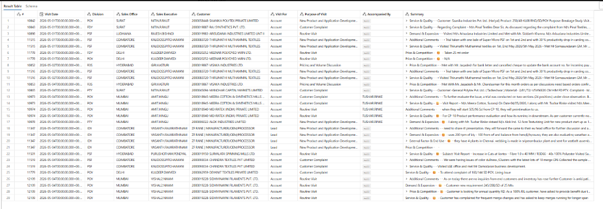
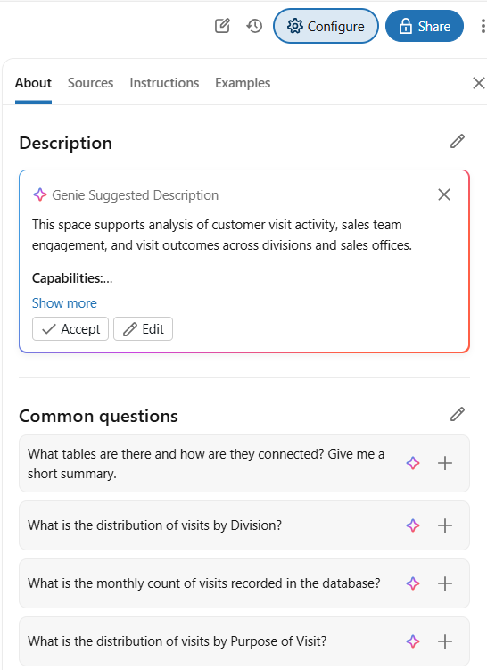
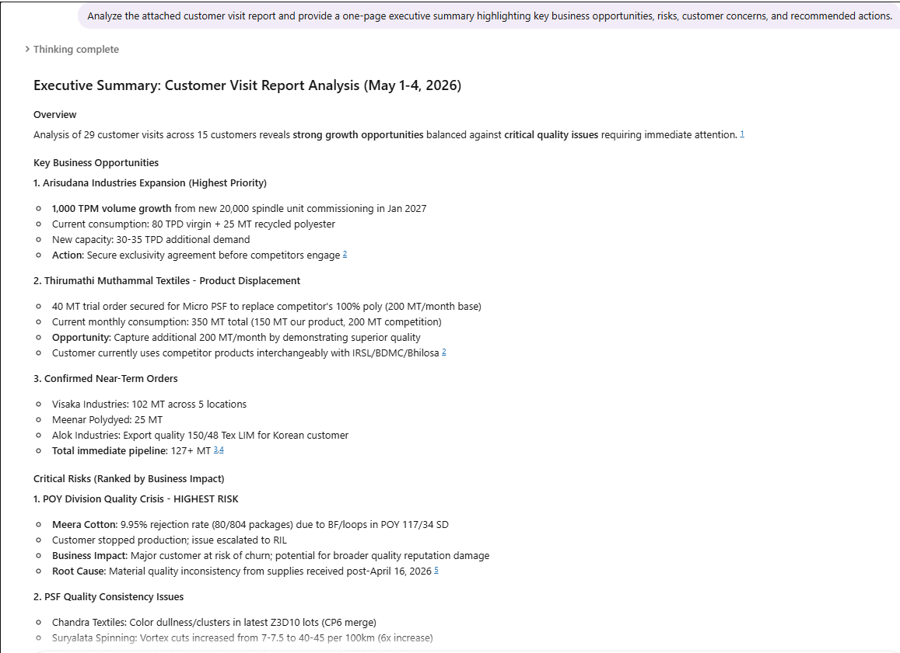
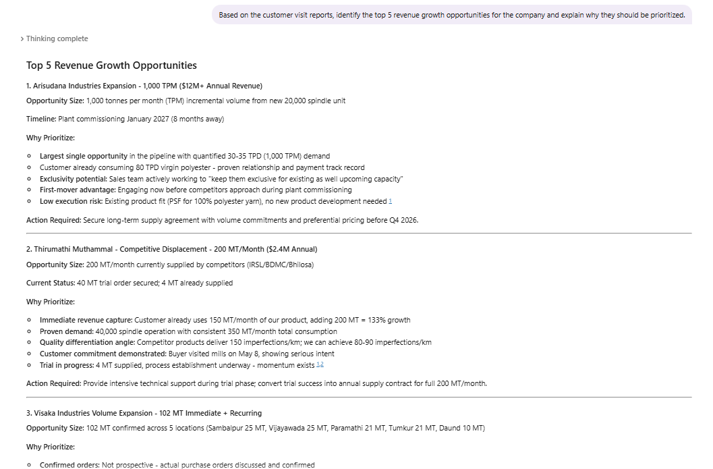
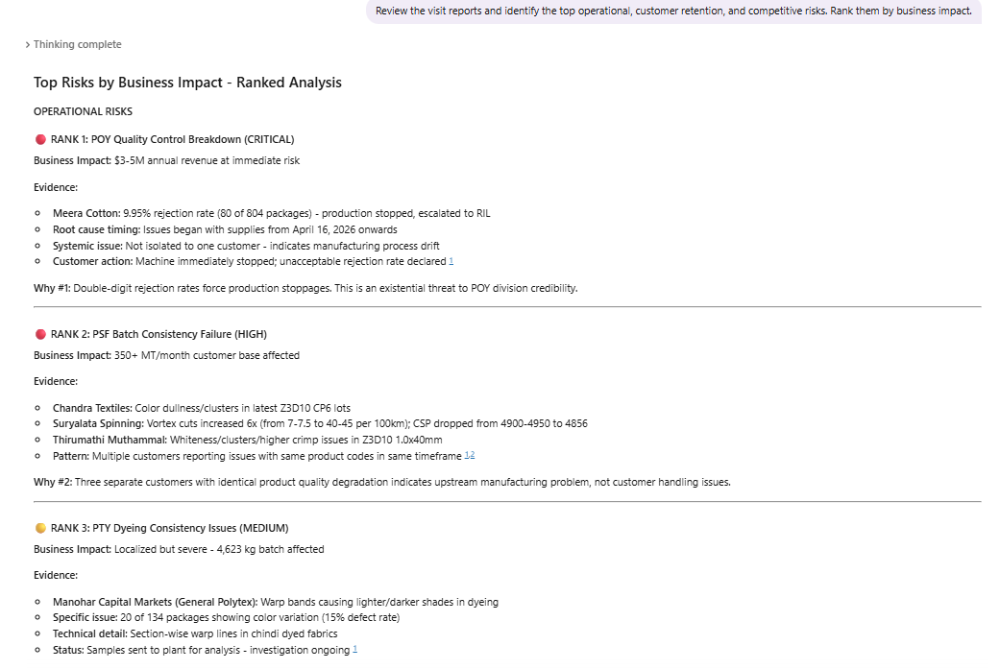
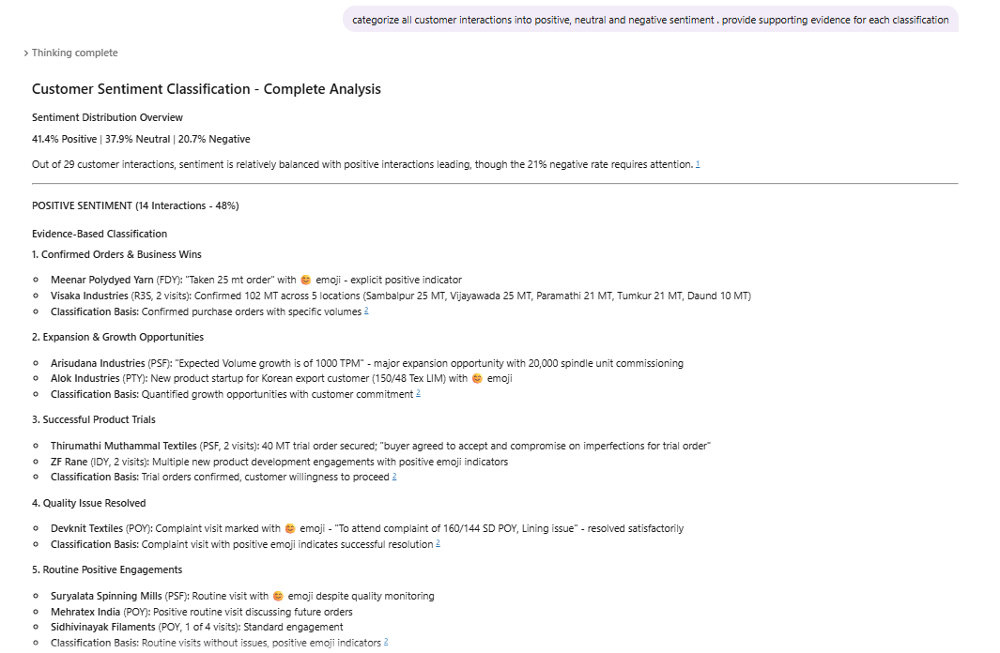
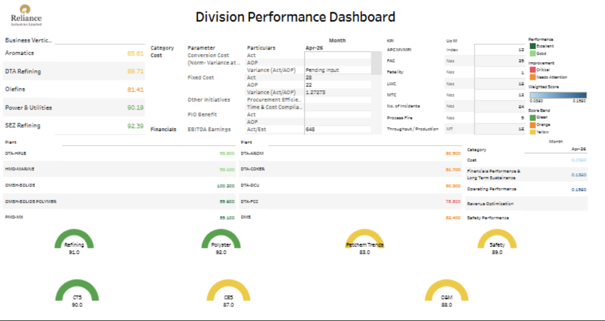

Summer Internship Project Review
AI-Assisted Business Intelligence & Executive Dashboard Development
Petrochemicals IT Division — Structured evaluation of Enterprise AI Assistants & Interactive Tableau Performance scorecards.
Slide 1: Title Slide
Good morning team and members of the PetChem IT department. I am Raunish Kathpalia, an MBA candidate from NIT Kurukshetra.
- From June 1st to July 30th, I had the privilege of interning with the PetChem IT division under the mentorship of Mr. Saurabh Shringarpure.
- This presentation details the two key projects completed during my internship: a structured business evaluation of AI assistants using customer visit logs, and the creation of an executive performance scorecard in Tableau.
- Let's start by looking at the overview of the internship objectives.
Internship Overview
Placement Context
Operating at the intersection of business strategy and IT, this internship was designed to transition from tools training into delivering enterprise analytical assets.
| Department | PetChem – IT |
| Role Focus | Business Intelligence |
| Key Platform | Databricks & Tableau |
Mastering query workflows within the Databricks environment to audit and manipulate unstructured tables.
Analyzing visit summaries to identify account trust levels and structural divisions in customer interactions.
Establishing a reproducible benchmark to compare LLM performance on unstructured customer queries.
Designing interactive worksheets and radial performance dials in Tableau to display plant metric health.
Slide 2: Internship Overview
This overview establishes the operational context. Placed within PetChem IT, my role bridged technical evaluation with business management.
- On the left, you see the profile details: the internship was focused on BI and performance evaluation.
- On the right are the four main objectives: gaining proficiency in Databricks, auditing visit reports, evaluating AI tools, and designing Tableau dashboard metrics.
- We structured the program so that each task naturally supported the next, forming a continuous workflow. Let's look at that timeline in the next slide.
Literature Review
Chen, Chiang & Storey (2012) explain how BI&A turns organisational data into information that supports decisions.
Kaplan & Norton (1992) discuss combining financial and non-financial measures to provide a broader view of performance.
Yigitbasioglu & Velcu (2012) review dashboards in performance management; Few (2013) emphasises at-a-glance monitoring.
Androutsopoulos, Ritchie & Thanisch (1995) examine natural-language interfaces for querying databases.
Chang et al. (2024) survey LLM evaluation; Zheng et al. (2023) highlight considerations and biases in evaluating open-ended responses.
Slide 3: Literature Review
The literature gives a foundation for both projects: using data to support decisions, designing dashboards for monitoring, enabling natural-language data access, and evaluating AI outputs consistently. These sources inform the work; they do not independently validate my project results.
Research Methodology
Design: Applied, descriptive and comparative evaluation.
- Reviewed customer visit report data and framed business questions.
- Compared Claude, ChatGPT, Gemini and Databricks Genie using a common question set.
- Qualitatively assessed outputs against five common criteria.
- Configured a Genie Space with business context and semantic instructions.
- Audited the available division scorecard dataset.
- Selected relevant KPIs and performance indicators.
- Created worksheets, filters and calculated fields.
- Built custom semi-circular gauges and integrated the executive dashboard.
Slide 4: Research Methodology
This was an applied internship project rather than a survey-based study. In Project 1, I used a common set of business questions and qualitative criteria to compare four assistants. In Project 2, I audited the available scorecard data, selected KPIs, created Tableau worksheets and combined them into a dashboard. I am not reporting a survey sample or statistical hypothesis tests because those were not part of the work described here.
Project 1 — AI Agent Evaluation
Evaluation Goal
Determine whether generative AI assistants can accurately analyze unstructured visit reports to extract relationship sentiment, identify account risks, and summarize division performance.

Presenter Contributions
- Schema Audit – Validated dataset structure and business mappings.
- Prompt Engineering – Designed standardized evaluation prompts.
- Run Execution – Conducted identical prompt testing.
- Analysis – Compared qualitative AI responses and documented findings.
Slide 5: Project 1 - AI Agent Evaluation
This slide introduces the first project, evaluating generative AI models for business support.
- The goal was to test how accurately these models could analyze unstructured text logs, like customer visit records, and extract business insights.
- In the center is a screenshot of the visit dataset from Databricks. It contains columns for Visit Date, Division, Customer, and Visit Summary.
- My contribution was auditing the dataset schema, designing the prompts, running the tests, and documenting the results.
- To ensure a fair test, we developed a standardized evaluation methodology, which is outlined next.
AI Evaluation Results & Genie Spaces
Showed strong business reasoning and produced structured summaries for this evaluation.
Was useful for natural-language data exploration and generating SQL for ad-hoc queries.
Supported summarisation; recommendations sometimes needed refinement.

Configured business context, semantic instructions and predefined analytical questions for the customer visit data.




Slide 6: AI Evaluation Results & Genie Spaces
Claude performed well on business reasoning in this particular evaluation, while Genie was useful for translating natural-language questions into SQL for data exploration. ChatGPT and Gemini helped with summarisation, although recommendations sometimes needed refinement. The Genie Space was configured for executive summaries, revenue opportunities, risk analysis and sentiment analysis. These were project observations, not a universal ranking or evidence of production deployment.
Project-2 Executive Dashboard Development
Audited and cleaned raw division performance data, verifying metrics against target business values.
Selected key operational metrics, including fixed cost variance, EBITDA, safety events, and plant efficiency index.
Created individual Tableau worksheets, designing custom radial performance dials and status trackers.
Assembled the worksheets into a single dashboard layout, organizing sections to present a clear division scorecard.
Cleaned the Division Scorecard dataset, designed worksheets, calculated target variances, and laid out the executive dashboard. (No database admin or server deployment tasks were claimed).
Slide 7: Executive Dashboard Development
This slide outlines the development of the division performance dashboard in Tableau.
- We followed a four-stage process: auditing the raw performance data, defining key operational metrics, building individual worksheets, and integrating them into a final dashboard layout.
- My work focused on cleaning the dataset, designing worksheets, calculating target variances, and laying out the dashboard.
- We will look at the completed dashboard next.
Final Executive Dashboard

Slide 8: Final Executive Dashboard
This is the completed Tableau dashboard, designed to give managers a quick overview of division health.
- In the top left, we track performance scores for core Business Verticals, like Aromatics and Refining.
- In the bottom left, the dashboard details individual Plant Scores.
- The center table compares actual costs and production metrics against targets.
- At the bottom, custom radial dials display performance scores for each division.
- Next, we will review the challenges encountered during the project and how they were resolved.
Challenges, Solutions & Key Learnings
Challenge: Learning a new analytics environment. Response: Used training material and practised queries.
Challenge: Outputs varied in style and length. Response: Used common prompts and evaluation criteria.
Challenge: Some scorecard fields were empty. Response: Used calculated fields and representative averages for selected visuals.
Challenge: Semi-circular gauges were not native. Response: Used trigonometric calculations to position marks along an arc.
Practised Databricks SQL, data validation, Tableau calculated fields, prompt design and structured AI evaluation.
Learned to connect IT tools with business questions, select relevant KPIs and communicate findings clearly for management review.
Slide 9: Challenges, Solutions & Key Learnings
The main challenges were learning Databricks, maintaining consistency when comparing AI assistants, handling incomplete scorecard fields and creating custom gauges in Tableau. I addressed them through practice, common prompts and criteria, calculated fields and trigonometric formulas. The experience strengthened my technical skills and helped me connect analytics outputs to business needs.
Summer Internship Project Review
Reliance Industries Limited — PetChem IT Division
Slide 10: Thank You
This concludes my presentation review.
- I would like to express my gratitude to my mentor, Mr. Saurabh Shringarpure, and the PetChem IT team for their guidance.
- I welcome any questions or feedback you may have about either of the projects. Thank you.